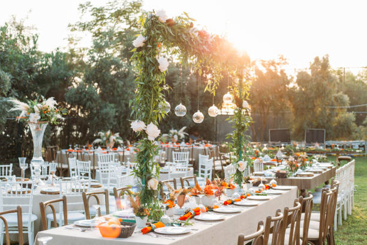

.png)


The fresh and elegant ambiance welcome
The fresh and elegant ambiance welcome
134 reviews
The flavors of mediterrenean are cooked upto 30 minutes in an instant pot.for a quick and filling. Savoury inspired for weeknight. The flavors of mediterrenean are cooked upto 30 minutes in an instant pot.for a quick and filling. Savoury inspired for weeknight. The flavors of mediterrenean are cooked upto 30 minutes in an instant pot.for a quick and filling. Savoury inspired for weeknight. The flavors of mediterrenean are cooked upto 30 minutes in an instant pot. for a quick and filling. Savoury inspired for weeknight.The flavors of mediterrenean are cooked upto 30 minutes in an instant pot.for a quick and filling. Savoury inspired for weeknight. The flavors of mediterrenean are cooked upto 30 minutes in an instant pot.for a quick and filling. Savoury inspired for weeknight.The flavors of mediterrenean are cooked upto 30 minutes in an instant pot.for a quick and filling. Savoury inspired for weeknight. The flavors of mediterrenean are cooked upto 30 minutes in an instant pot.for a quick and filling. Savoury inspired for weeknight. See more
Like
234
3 hours ago